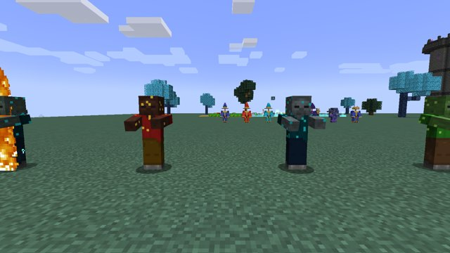
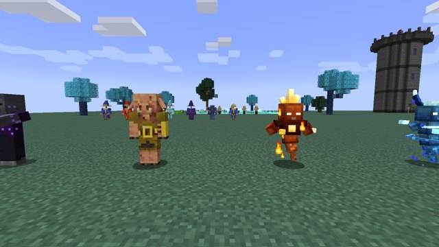
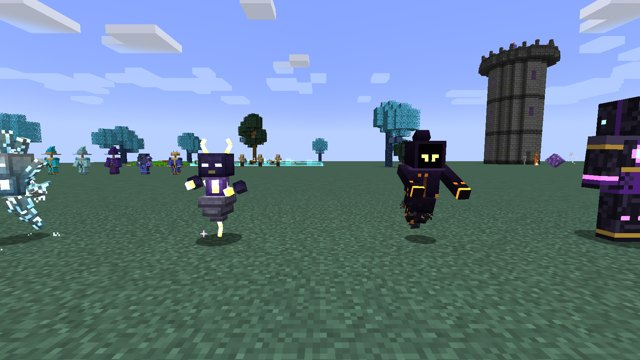
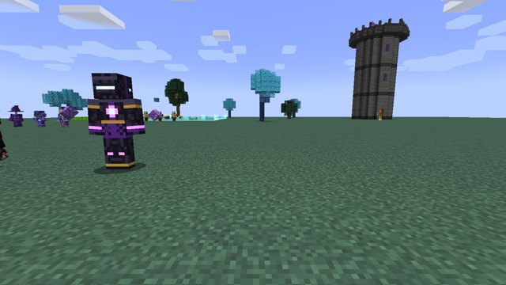
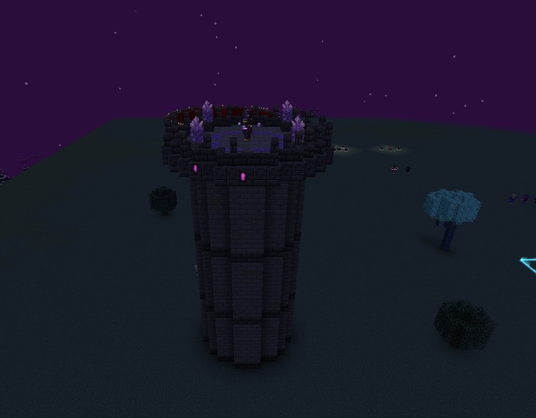
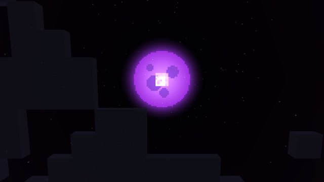
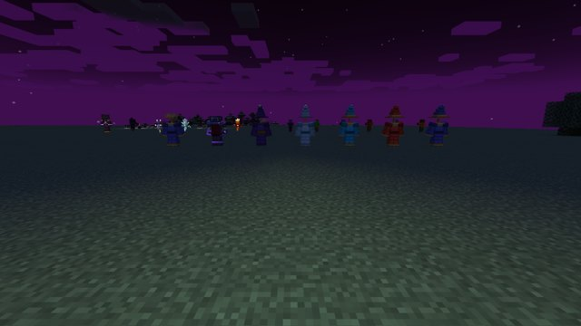
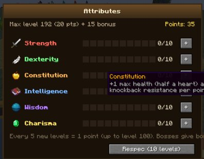

Espíritos Elementais, a Torre Arcana, a Masmorra, a Lua Roxa e os Atributos.
Espíritos Elementais
Espíritos que flutuam como blazes e aparecem (não muito comuns) à noite nos biomas do seu elemento. Cada elemento tem seu próprio corpo: o de Fogo tem coroa de chamas e punhos grandes, o de Água um rabo ondulante e um anel de água girando, o de Gelo espinhos de cristal translúcido e o de Trovão chifres em zigue-zague e um corpo de nuvem com um raio pendurado. Carregam por um instante (brilhando) e atiram dois disparos do elemento; colados em você, batem. Têm 13 corações.
Espírito
Onde aparece
Disparo
Solta
Espírito do Fogo
Deserto, savana, badlands e Nether
Queima por 4s
Pó de Blaze
Espírito da Água
Praias, rios, pântanos e ilhas no oceano
Empurra forte e apaga o fogo
Cristais de Prismarinho
Espírito do Gelo
Biomas de neve e picos gelados
Lentidão II e congela
Bolas de neve e Gelo Compactado
Espírito do Trovão
Montanhas, ou qualquer lugar durante tempestades
Choque com dano extra
Pó de Pedra Luminosa e Cobre

Zumbi de Fogo e Zumbi Contaminado

Mago Midas, Espírito do Fogo e da Água

Espíritos do Gelo e do Trovão e a Sombra

Sentinela Arcana e a Torre Arcana ao fundo
Todos podem soltar Essência de Mana (15%) e, se você matar, o Estilhaço Instável (8%, mais com Pilhagem). O de fogo se machuca na água; o de água respira debaixo dela.
Torre Arcana e Sentinela Arcana
Uma torre arcana de três andares aparece (rara) em florestas e planícies. Entre pela porta ao sul e suba pela escada de mão da parede norte: há zumbis e esqueletos no térreo, esqueletos e um Mago da Folha no segundo andar e um Espírito Elemental no terceiro. No topo aberto, a Sentinela Arcana guarda um baú com loot de meio de jogo.
Ataque
Como funciona
Rajada Arcana
Antes, linhas roxas de mira ligam ela até você por 1 segundo; depois, 3 disparos roxos que perseguem você de leve (6 de dano mágico e Fraqueza). Com o escudo, 5 disparos
Nova Arcana
Se você chega perto, ela marca um disco roxo no chão e, 1 segundo depois, explode em volta (9 de dano e empurrão). Saia do círculo ou role (R)!
Escudo
Abaixo de 75% da vida, a cada 20s fica 5s com um escudo de cristais: corta 80% do dano
Reforços
Na metade da vida marca 2 anéis roxos no chão e, 1 segundo depois, surgem neles 2 Espíritos Elementais (uma vez só)

A Torre Arcana vista de cima
A Sentinela tem 100 corações, armadura e barra de chefe roxa, não leva dano de queda e não some. Derrotada, solta 1 Diamante Instável, 2 a 4 Estilhaços, Essência de Mana e uma Orbe de Mana. O baú pode ter Estilhaços, Diamante Instável, diamantes, livros encantados, Orbe de Mana e até uma Orbe de Mana Condensada ou uma ferramenta instável.
Masmorra Elemental
Uma masmorra subterrânea e rara (entre as camadas -30 e 20, em qualquer bioma da Superfície). No centro, um salão com o baú final e um spawner de zumbi ou esqueleto; dele saem 4 corredores com armadilhas de flechas (placas de pressão atravessando o corredor) até 4 salas, uma por elemento. Cada sala tem o seu Guardião: um Espírito Elemental com 40 corações e mais dano, que não sai da sala, e um baú do elemento.
Sala
Como é
Baú do elemento
Fogo (norte)
Tijolos do Nether, blocos de magma e poços de lava
Varas de Blaze, Creme de Magma
Água (sul)
Prismarinho, lanternas do mar e uma piscina
Fragmentos de Prismarinho, às vezes Coração do Mar
Gelo (leste)
Gelo compactado e azul, buracos de neve fofa
Gelo Azul, Gelo Compactado
Trovão (oeste)
Cobre e para-raios
Barras de Cobre, Para-raios
Os baús das salas podem ter o Bloco Corrompido do elemento e peças da Armadura Elemental já com o elemento. O baú final tem estilhaços, Diamantes Instáveis, Orbes, diamantes, livros encantados e às vezes um Bloco Corrompido, uma ferramenta instável ou um Peitoral Elemental. Cada Guardião solta 2 ou mais Estilhaços Instáveis e Essência de Mana.
Lua Roxa
Em uma noite rara (1 em 10, a partir do 4º dia) ou chamada pelo Ritual da Lua Roxa, a lua fica roxa, o céu e a neblina ficam roxos e ninguém consegue dormir. Vêm 5 ondas de monstros, uma por minuto, em volta de cada jogador na Superfície: zumbis, esqueletos, bruxas, magos e Espíritos Elementais (brilhando), cada onda maior. Depois da última chega o Arauto da Lua Roxa: uma Sentinela Arcana com 150 corações. Todos os monstros das ondas têm contorno roxo brilhante (dá para ver através das paredes) e não somem sozinhos. Se a meia-noite chegar antes de você vencer, a lua para no meio do céu até todos os monstros roxos e o Arauto caírem (a barra mostra quantos faltam); depois o tempo volta a correr.

A lua roxa no alto do céu

A noite da Lua Roxa
Os monstros da Lua Roxa soltam Fragmentos Lunares (35%). O Arauto solta 4 a 6 fragmentos, Diamante Instável e dá 1 ponto de habilidade. A Lua Roxa acaba quando amanhece.
Atributos (tecla K)
Aperte K para abrir os Atributos, no estilo de D&D. A cada 5 níveis de XP que você alcança pela primeira vez ganha 1 ponto (nível 5, 10, 15... até o 100 = 20 pontos; gastar níveis encantando não tira pontos). Chefes dão pontos bônus (golem: 2; Sentinela Arcana e Arauto da Lua Roxa: 1) e o Ritual do Conhecimento dá 1. Cada atributo vai de 0 a 10. Redistribuir tudo custa 10 níveis de XP. Os pontos não se perdem ao morrer.
Atributo
Por ponto
Força
+0,3 de dano corpo a corpo
Destreza
+1% de velocidade, +2% de velocidade de ataque e a rolagem recarrega 0,1s mais rápido
Constituição
+1 de vida máxima (meio coração) e +2% de resistência a empurrão
Inteligência
+1 de mana máxima a cada 2 pontos e +2% de dano das habilidades dos Blocos Mágicos
Sabedoria
A mana volta 5% mais rápido e -2% de dano mágico/elemental recebido
Carisma
+0,1 de sorte e 1% de chance de uma habilidade não gastar mana

A tela de Atributos (tecla K)
Fragmento do Eclipse
Em um dia raro (1 em 12, ao meio-dia, a partir do 5º dia) ou chamado pelo Ritual do Eclipse, a lua cobre o sol: o céu escurece, o horizonte fica alaranjado e um disco negro com coroa de fogo toma o lugar do sol por 2 minutos. Enquanto dura, Sombras surgem da fumaça em volta de cada jogador na Superfície (2 a 3 a cada 10s, até 8 perto de você).
Como é
Sombra
Espectro encapuzado de olhos laranja que flutua com uma cauda de fumaça. 12 corações, golpe de 5 que cega por 2s.
Só morre perto de luz
Sem luz, os golpes atravessam a Sombra. Ela só toma dano com luz de bloco 7+ onde está, se alguém a até 6 blocos segura uma tocha, lanterna ou a Lanterna de Mana (na mão ou no cinto), ou com fogo.
Fragmento do Eclipse
As Sombras soltam (40%, mais com Pilhagem). Faz a Torre de Cristal.
Fim
Quando o eclipse acaba, as Sombras se desfazem na luz do sol.